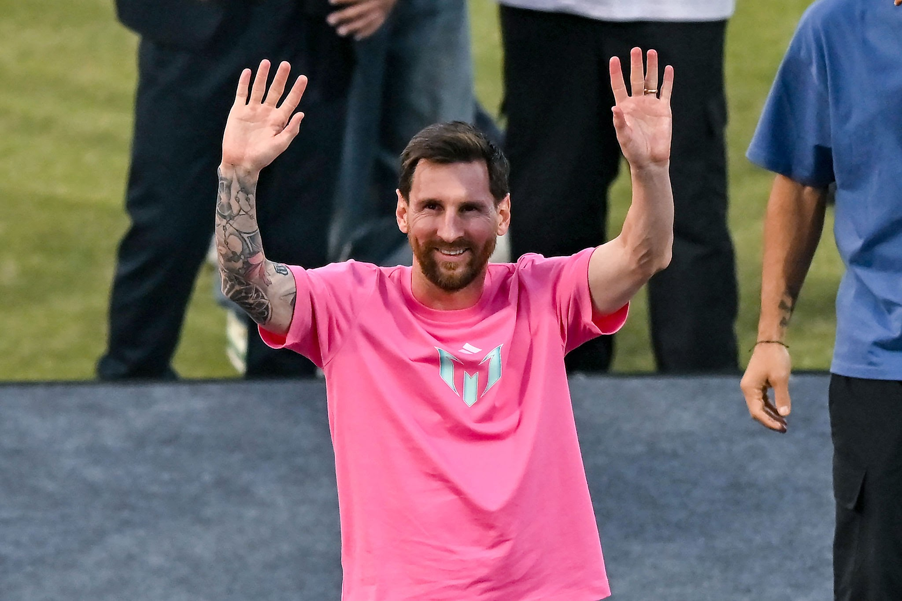

Lionel Messi es un futbolista argentino, considerado uno de los mejores de la historia. Brilló en el FC Barcelona, donde ganó muchos títulos y fue su máximo goleador. Luego jugó en el Paris Saint-Germain y actualmente está en el Inter Miami CF. Con la selección de Argentina ganó la Copa América 2021 y el Mundial de Copa Mundial de la FIFA 2022.
La formación de Lionel Messi comenzó en Rosario, donde jugó en el club Grandoli y luego en las divisiones juveniles de Newell's Old Boys; a los 13 años se trasladó a España para ingresar a la academia La Masía del FC Barcelona, donde completó su formación como futbolista profesional y desarrolló las habilidades que lo llevarían a convertirse en uno de los mejores jugadores de la historia.
Lionel Messi es uno de los futbolistas más reconocidos de la historia gracias a su talento, constancia y logros tanto individuales como colectivos, destacándose por romper récords, ganar títulos importantes y ser considerado en múltiples ocasiones como el mejor jugador del mundo